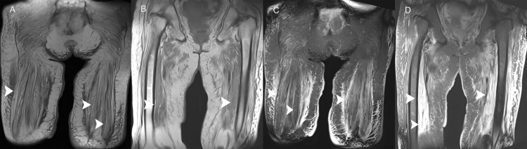
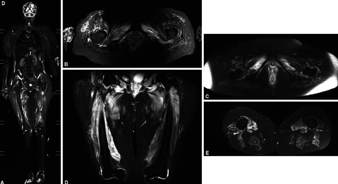
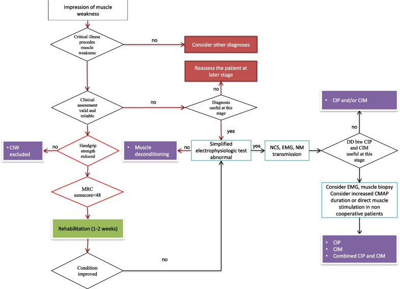

1774 — Bệnh cơ do corticoid & bệnh cơ bệnh nặng ở ICU / Corticosteroid myopathy & critical illness myopathy (CIM/CIP)
Tags: pattern:teo-co pattern:thay-mo-co pattern:phu-co pattern:yeu-co-doi-xung vung:chi-duoi vung:co-xuong vung:mo-mem score:MRC-SS protocol:MRI-STIR protocol:MRI-Dixon protocol:SA-co protocol:dien-co incidentaloma:khong
Mức chắc chắn (certainty): tổng hợp y văn (literature synthesis) — 1 tổng quan hồi sức lớn (tab bệnh học + thuật toán, Crit Care 2023), 1 đoàn hệ MRI vai 25 bệnh nhân sau ICU, 1 nghiên cứu STIR 7 ca CIMN so với 7 ca Guillain–Barré, 3 ca CIM sau COVID có ảnh MRI, 1 nghiên cứu qMRI 9 người sống sót ICU, 1 tổng quan ICU-AW 2026 (các ngưỡng siêu âm/điện cơ) và 2 tổng quan bệnh cơ do glucocorticoid. 3 ca trong quiz là ca công bố, lấy nguyên văn ảnh gốc.
Câu chốt: yếu cơ đối xứng ở bệnh nhân ICU không phải một bệnh — phù cơ lan tỏa trên STIR = bệnh đang hoạt động (CIM cấp), teo + thay mỡ không phù = di chứng (mạn), và cả hai đều không đáp ứng corticoid. Ngược lại IMNM/viêm cơ cũng phù cơ nhưng CK tăng rất cao + tự kháng thể + đau, và có chỉ định ức chế miễn dịch. Ba con số phải thuộc: 43% bệnh nhân hồi phục chậm có ICU-AW; STIR phù cơ lan tỏa: Se 100% / Sp 85,7% phân biệt CIMN với GBS; MRC tổng ≤ 48 là ngưỡng chẩn đoán yếu cơ mắc phải.
1. Tổng quan bệnh học – cơ chế hình ảnh
1.1 Bệnh cơ hồi sức gồm những gì
- Yếu cơ mắc phải ở ICU (ICU-acquired weakness, ICUAW) là thuật ngữ ô dù: bệnh cơ bệnh nặng (critical illness myopathy, CIM), bệnh thần kinh bệnh nặng (critical illness polyneuropathy, CIP), hoặc kết hợp — cộng thêm bệnh cơ do thuốc (glucocorticoid, thuốc giãn cơ) và bệnh cơ do bất động/dinh dưỡng.
- Tần suất: 43% (KTC 25–75%) ở bệnh nhân hồi phục chậm; > 50% nếu còn nằm ICU ngày thứ 8; tới 64% ở bệnh nhân nhiễm khuẩn huyết. Đây là lý do mọi bệnh nhân thở máy > 5–7 ngày đều phải được đánh giá sức cơ, không chờ "khi tỉnh hẳn".
- Ba cơ chế chính của CIM: (a) mất sợi myosin dày (thick filament myosin loss) — đặc trưng nhất, gắn với corticoid + giãn cơ + nhiễm khuẩn; (b) hoại tử rải rác; (c) hoại tử lan tỏa (viêm cơ hoại tử của ICU) — hiếm, tiên lượng xấu.
- Bệnh cơ do glucocorticoid (glucocorticoid-induced myopathy, GIM): teo chọn lọc sợi type II, yếu gần, không đau, CK bình thường, điện cơ bình thường hoặc chỉ myopathic nhẹ — khác CIM ở chỗ không có mất myosin dày và không phù cơ.
1.2 TẠI SAO ảnh phản ánh đúng sinh lý bệnh (vật lý + mô bệnh)
- Phù cơ (cấp) — STIR/T2 fat-sat tăng tín hiệu: phù = nước tự do làm T2 dài, và STIR bão hòa mỡ nên nước trong cơ nổi bật trên nền tối. Trong CIM cấp, tăng tính thấm mao mạch + rối loạn bơm Na⁺/K⁺ của màng cơ gây phù nội bào/ngoại bào lan tỏa, đối xứng, ưu thế gốc chi — hình ảnh không đặc hiệu nhưng rất nhạy.
- Teo + thay mỡ (mạn) — T1 tăng tín hiệu, STIR KHÔNG tăng: khi sợi cơ chết/teo, mô mỡ thay thế; mỡ có T1 ngắn nên sáng trên T1, và bị bão hòa trên STIR/T2 fat-sat nên tối — đây là dấu hiệu di chứng, không phải viêm đang hoạt động. Vì vậy một chuỗi STIR âm không loại trừ bệnh cơ; phải xem T1/Dixon fat fraction để thấy thay mỡ.
- Vì sao CIM hay gặp ở cơ gốc chi và cơ hô hấp: cơ type II (sợi nhanh) chiếm ưu thế ở đùi, vai, cơ hoành và nhạy với corticoid/bất động hơn → yếu gần > xa, không đối xứng thần kinh ngoại vi, không liệt dây sọ (khác GBS).
- Vì sao "CK bình thường" lại là chìa khóa: mất myosin dày không phá màng sợi cơ → CK chỉ tăng nhẹ; còn hoại tử cơ (IMNM, viêm cơ, necrotizing ICU myopathy) vỡ màng → CK tăng hàng nghìn. Vì vậy CK tăng rất cao là cờ đỏ chống lại CIM đơn thuần.
- Vì sao MRI không thay được điện cơ: MRI thấy hậu quả (phù/teo/mỡ), điện cơ thấy cơ chế (màng cơ vs sợi trục). Câu "phù cơ" không phân biệt CIM với IMNM — quyết định nằm ở CK + tự kháng thể + thời gian + đau.
1.3 Số liệu nền (bắt buộc thuộc)
- Ngưỡng lâm sàng: MRC tổng (MRC-SS) < 48/60 = ICUAW; lực bóp tay < 7 kg (nữ) / < 11 kg (nam) là ngưỡng sàng lọc (Se 88% / Sp 80%, n = 60).
- Điện cơ: dây thần kinh mác (peroneal) đơn thuần: Se 94% / Sp 91% (n = 95) để phát hiện bệnh cơ–thần kinh mắc phải; CIM: biên độ CMAP giảm + thời khoảng CMAP kéo dài, SNAP bình thường; CIP: CMAP và SNAP đều giảm, thời khoảng bình thường.
- Siêu âm cơ: tốc độ teo diện tích ngang cơ thẳng đùi (RFCSA) ≥ 6,9% → ICUAW Se 76,5% / Sp 92,2% (n = 76).
- Sinh thiết: tỉ lệ myosin/actin < 1,7 là bất thường; mất myosin chọn lọc là đặc hiệu của CIM.
- MRI: STIR phù cơ lan tỏa phân biệt CIMN với GBS: Se 100% / Sp 85,7% / PPV 87,5% / NPV 100% (7 ca mỗi nhóm). Ở 25 bệnh nhân ICU-AW sau COVID, 23/25 (92%) có phù cơ kiểu ngoại vi trong tháng đầu sau ra ICU, 23/25 (92%) hết phù sau 3 tháng, không có thay mỡ hay hoại tử cơ; nhưng 12/20 (60%) còn đau/vận động vai kém ở 3 tháng.
- Hậu quả dài hạn: ở người sống sót ICU, qMRI nhiều năm sau vẫn thấy tỉ lệ mỡ tăng và water T2 tăng — tức vừa di chứng vừa còn hoạt động bệnh; dấu hiệu điện cơ kiểu CIP tồn tại tới 5 năm ở > 90% bệnh nhân nằm ICU dài (> 28 ngày).
2. Mẫu hình + chẩn đoán phân biệt theo vị trí (Gamut)
Mẫu hình: yếu cơ đối xứng, gần > xa, không liệt dây sọ, cảm giác bình thường ± phù cơ STIR lan tỏa (cấp) ± teo + thay mỡ T1 (mạn).
- Theo vị trí tổn thương:
- Cơ (myopathy): CIM, bệnh cơ do corticoid, bệnh cơ do bất động/dinh dưỡng, viêm cơ hoại tử miễn dịch (IMNM), viêm đa cơ/bệnh cơ do thuốc.
- Dây thần kinh ngoại vi (neuropathy): CIP, GBS (bệnh cảnh cấp, tiến triển, areflexia, cảm giác), bệnh thần kinh do tư thế nằm sấp (prone-positioning).
- Tấm vận động: blốc thần kinh cơ tồn dư do thuốc giãn cơ (kéo dài, hiếm).
- Tủy/cột sống: nhồi máu tủy, áp-xe, chèn ép do thủ thuật — yếu không đối xứng + mức cảm giác.
- Theo giai đoạn (quyết định ý nghĩa ảnh): cấp < 1 tháng** (phù cơ) → **bán cấp 1–3 tháng** (phù giảm, teo bắt đầu) → **mạn > 6 tháng (teo + thay mỡ, không phù).
- Mnemonic "MUSCLE": Myopathy bệnh nặng (CIM), Use-disuse (bất động), Steroid, CIP (neuropathy), Long stay/nutrition (suy dinh dưỡng), Electrolyte (hạ K, hạ Mg, hạ phospho).
3. Bảng so sánh phân biệt (ma trận đối chiếu)
| Thực thể (entity) | Hình ảnh điển hình | Chốt vào (rule-in) | Chốt loại (rule-out) | Gợi ý xác nhận |
|---|---|---|---|---|
| CIM (bệnh cơ bệnh nặng) | Phù cơ lan tỏa, đối xứng, gốc chi trên STIR (Se 100%/Sp 85,7% so với GBS); sau đó teo; không thay mỡ giai đoạn sớm | Yếu đối xứng sau nhiễm khuẩn/thở máy + STIR phù lan tỏa + CMAP giảm/thời khoảng dài + SNAP bình thường | CK rất cao + tự kháng thể + đau cơ → nghĩ IMNM, không phải CIM | Điện cơ + DMS (neCMAP:mfCMAP > 0,5); sinh thiết nếu chẩn đoán chưa rõ |
| Bệnh cơ do corticoid | Teo + thay mỡ trên T1/Dixon, STIR KHÔNG phù; teo chọn lọc type II, chủ yếu đùi/vai | Dùng corticoid liều cao kéo dài + yếu gần không đau + CK bình thường + STIR âm | Phù cơ lan tỏa → không phải GIM đơn thuần (nghĩ CIM/viêm cơ) | Ngừng/giảm corticoid → cải thiện trong vài tuần–vài tháng |
| IMNM / viêm cơ hoại tử miễn dịch | Phù cơ không đối xứng, từng đám, ưu thế đùi sau/khép; thay mỡ theo thời gian (T1 score tăng) | CK tăng rất cao + anti-SRP/anti-HMGCR + yếu tiến triển trong tuần–tháng | Phù lan tỏa đối xứng + CK bình thường + bối cảnh ICU → loại IMNM | CK, tự kháng thể myositis, STIR% cao khi chưa điều trị, sinh thiết cơ |
| CIP (bệnh thần kinh bệnh nặng) | Không phù cơ, teo do mất chi phối; STIR bình thường; NMUS: dây thần kinh dày, giảm đậm độ | CMAP giảm + SNAP GIẢM + thời khoảng CMAP bình thường; phản xạ gân xương giảm/mất | SNAP bình thường → loại CIP, nghĩ CIM | Điện cơ; NMUS thần kinh; tiên lượng chậm hơn CIM |
| GBS (Guillain–Barré) | 86% MRI bình thường; 14% có phù cơ nhẹ — không đặc hiệu | Tiến triển < 4 tuần + areflexia + cảm giác + dịch não tủy protein tăng | STIR phù lan tỏa đối xứng → nghĩ CIMN hơn GBS (NPV 100% trong loạt nhỏ) | Điện cơ (giảm dẫn truyền), CSF; MRI không dùng để loại GBS |
| Bệnh cơ do bất động / suy dinh dưỡng | Teo đối xứng, thay mỡ, không phù, không hoại tử | Nằm lâu + giảm cân + CK/điện cơ bình thường | Phù STIR + CMAP giảm → không chỉ do bất động | Chỉnh dinh dưỡng, vận động; hồi phục chậm |

Bệnh cơ bệnh nặng: (A, B) T1 đùi–chậu — teo cơ lan tỏa, mỡ thay thế (T1 sáng); (C, D) T2 fat-sat — không có phù nội cơ nổi bật ngoài các dải tín hiệu cao. Nguồn: Cureus 2021;13(3):e13807 (PMC8027959), CC BY.3.1 Hai pha của cùng một bệnh — đọc đúng để không điều trị sai

*Bệnh cơ–thần kinh bệnh nặng: (A) STIR toàn thân và (B–E) STIR đùi — phù cơ lan tỏa, đối xứng, ưu thế gốc chi. Trong loạt 7 ca CIMN so với 7 ca GBS, Se 100% / Sp 85,7%. Nguồn: Indian J Crit Care Med 2022;26(2):204–209 (PMC8857722), CC BY-NC — ảnh nguyên bản.*- Cấp (tuần 1–4): phù cơ — dấu hiệu đang hoạt động, có thể hồi phục hoàn toàn (92% hết phù sau 3 tháng ở loạt 25 ca COVID).
- Mạn (> 6 tháng): teo + thay mỡ, STIR âm — dấu hiệu di chứng; không có nghĩa là bệnh đang tiến triển, và không phải chỉ định corticoid.
- Vì sao phải phân biệt: corticoid làm teo cơ type II và làm nặng thêm CIM; cho corticoid vì "thấy phù cơ" là sai hướng trừ khi có bằng chứng viêm cơ (CK cao, tự kháng thể, sinh thiết).
4. Protocol + thuật toán
4.1 Chụp gì, khi nào
- MRI đùi/hángthế (thigh) 3T: STIR hoặc T2 fat-sat (phù) + T1 hoặc mDixon (mỡ/thay mỡ) + T1 sau tiêm chỉ khi nghi viêm cơ/áp-xe; thời điểm tốt nhất: 1–3 tháng sau ra ICU (đủ để phù rõ, chưa teo hoàn toàn); quá sớm < 2 tuần dễ âm giả.
- Định lượng: fat fraction (Dixon) và water T2 — hai thông số theo dõi được; không dùng "độ sáng tương đối" bằng mắt.
- Siêu âm cơ (NMUS): RFCSA và tốc độ teo ≥ 6,9%; độ dày/độ hồi âm cơ hoành dự đoán thất bại cai máy; làm được tại giường, lặp lại hằng ngày.
- Điện cơ: PENT/peroneal NCS khi bệnh nhân không hợp tác; DMS phân biệt màng cơ (CIM) với sợi trục (CIP) — tỉ lệ neCMAP:mfCMAP > 0,5 → CIM, < 0,5 → CIP.
- Sinh thiết cơ: chỉ khi chẩn đoán chưa rõ, nghi IMNM/viêm cơ, hoặc CK rất cao; kim nhỏ đo myosin/actin (bất thường < 1,7) ít xâm lấn hơn sinh thiết mở.
flowchart TD
A[Bệnh nhân ICU yếu cơ đối xứng] --> B{MRC tổng < 48<br/>hoặc lực bóp tay thấp?}
B -->|Không| C[Theo dõi, vận động sớm]
B -->|Có| D{CK và tự kháng thể myositis?}
D -->|CK rất cao / kháng thể dương| E[IMNM hoặc viêm cơ<br/>cân nhắc ức chế miễn dịch]
D -->|CK bình thường hoặc tăng nhẹ| F[Điện cơ: CMAP, SNAP, DMS]
F --> G{SNAP bình thường?}
G -->|Có| H[CIM: giảm corticoid/giãn cơ,<br/>vận động sớm, MRI STIR 1-3 tháng]
G -->|Không| I[CIP hoặc kết hợp:<br/>tiên lượng phục hồi chậm]
H --> J[Theo dõi 3-6 tháng:<br/>phù giảm? thay mỡ?]
I --> J
4.2 Điều trị — cái gì có bằng chứng, cái gì không
- Không có thuốc đặc hiệu. Nền tảng: giảm/ngừng corticoid và thuốc giãn cơ, giảm an thần, kiểm soát nhiễm khuẩn/đường huyết, dinh dưỡng đủ đạm, vận động sớm.
- Dinh dưỡng: phân tích dưới nhóm EPaNIC (122 sinh thiết cơ + 20 chứng) cho thấy nuôi dưỡng ngoài đường tiêu hóa MUỘN giảm ICUAW và hồi phục nhanh hơn so với nuôi dưỡng sớm.
- Kích điện cơ (NMES): meta-analysis 2020 (6 RCT, 718 bệnh nhân) không khác biệt về sức cơ tổng, tử vong ICU, thời gian thở máy/ICU; RCT 2022 (n = 139) và RCT 2023 (n = 118) sau đó cho kết quả tốt hơn trên chức năng và thời gian thở máy — bằng chứng chưa đồng nhất, dùng như bổ trợ.
- Tiên lượng: CIM hồi phục tốt hơn CIP; CIP kéo dài hơn, để lại giảm/mất phản xạ, rối loạn cảm giác kiểu "bao tay–tất", đau; dấu hiệu điện cơ tồn tại 5 năm ở > 90% ca nằm ICU dài.
- Bệnh cơ do corticoid: giảm liều/đổi corticoid → cải thiện trong vài tuần đến vài tháng; không dùng thêm corticoid để "điều trị teo cơ".
5. Biến thể bình thường và cạm bẫy
- Cạm bẫy 1 — "không phù = không bệnh": giai đoạn mạn chỉ có teo + thay mỡ; nếu chỉ chụp STIR sẽ âm giả. Luôn kèm T1/Dixon.
- Cạm bẫy 2 — "phù = viêm, cho corticoid": phù cơ trong CIM lan tỏa, đối xứng, CK bình thường; cho corticoid làm teo cơ nặng thêm. Chỉ điều trị ức chế miễn dịch khi CK cao/tự kháng thể/sinh thiết.
- Cạm bẫy 3 — nhầm CIP với CIM: cùng yếu cơ, cùng bối cảnh; SNAP là điểm chia: CIM giữ SNAP, CIP mất SNAP. DMS củng cố (neCMAP:mfCMAP).
- Cạm bẫy 4 — MRI bình thường không loại GBS: 86% ca GBS có MRI cơ bình thường; chẩn đoán GBS dựa vào diễn tiến + phản xạ + dịch não tủy + điện cơ, không dựa MRI.
- Cạm bẫy 5 — bỏ sót nguyên nhân thứ hai: bệnh nhân ICU có thể vừa CIM vừa chèn ép thần kinh do tư thế (nằm sấp, liệt trụ/liệt mác) → yếu không đối xứng phải tìm chèn ép, không quy hết cho ICUAW.
- Biến thể bình thường: teo cơ do bất động ở người già/nằm lâu cho thay mỡ nhẹ đối xứng — không đồng nghĩa bệnh cơ; mỡ dưới da dày gây bão hòa mỡ không đều trên STIR, dễ đọc thành "phù cơ" (dùng Dixon để tránh).
- Bẫy hình học: đặt ROI/cửa sổ theo trục cơ ở 1/3 giữa đùi, tránh chỗ gân bám và mạch máu; so sánh hai bên cùng lát.
6. Tự lượng giá — Blind Quiz
Ca 1 — Nam 57 tuổi, thở máy 3 tuần vì viêm phổi nặng + corticoid liều cao; không nhấc được chân. Ảnh MRI đùi:
- Hỏi: (1) Mô tả cơ đùi trên T1? (2) Có phù đang hoạt động không? (3) Chẩn đoán và hướng xử trí?
Bấm để hiện đáp án
- T1 (A, B): teo cơ lan tỏa hai bên, dải mỡ thay thế (tín hiệu sáng trong bụng cơ).
- T2 fat-sat (C, D): không có phù nội cơ lan tỏa — chỉ các dải tín hiệu cao rời rạc; nghĩa là không có viêm cơ đang hoạt động.
- Chẩn đoán: bệnh cơ bệnh nặng giai đoạn teo–thoái hóa (kèm bệnh cơ do corticoid); không phải viêm cơ. Xử trí: giảm corticoid, vận động sớm, dinh dưỡng đủ đạm; không thêm ức chế miễn dịch.
- Nguồn ảnh: Cureus 2021;13(3):e13807 (PMC8027959), CC BY.
Ca 2 — Nữ 34 tuổi, sau 5 tuần ICU vì COVID-19, yếu gần hai vai; STIR toàn thân:
- Hỏi: (1) Tín hiệu bất thường là gì, phân bố ra sao? (2) Nó nói gì về giai đoạn bệnh? (3) Chẩn đoán phân biệt chính và cách loại?
Bấm để hiện đáp án
- Tín hiệu: tăng tín hiệu lan tỏa, đối xứng ở cơ gốc chi trên STIR — phù cơ, ưu thế đùi/vai.
- Giai đoạn: cấp/đang hoạt động — có thể hồi phục; loạt 25 ca tương tự cho thấy 92% hết phù sau 3 tháng.
- Phân biệt: IMNM/viêm cơ (loại bằng CK rất cao + tự kháng thể + đau + phù không đối xứng), GBS (MRI bình thường 86%, loại bằng điện cơ/CSF), CIP (SNAP giảm, không phù cơ).
- Nguồn ảnh: Indian J Crit Care Med 2022;26(2):204–209 (PMC8857722), CC BY-NC.
Ca 3 — Bệnh nhân 70 tuổi, mở mắt, làm theo lệnh nhưng không nhấc tay; dùng thuật toán dưới đây:

- Hỏi: (1) Bước nào quyết định trước khi kết luận ICUAW? (2) Nếu bệnh nhân không hợp tác thì dùng gì? (3) Khi nào chuyển sang điện cơ/sinh thiết?
Bấm để hiện đáp án
- Bước quyết định: loại trừ nguyên nhân khác ("critical illness provides muscle weakness?") — nếu không thì đánh giá lại sau, không gán nhãn ICUAW; sau đó lực bóp tay (ngưỡng < 7 kg nữ / < 11 kg nam) và MRC tổng < 48.
- Không hợp tác: dùng xét nghiệm điện cơ rút gọn (PENT/peroneal NCS — Se 94%/Sp 91%), rồi NCS/EMG/DMS; siêu âm cơ (tốc độ teo RFCSA ≥ 6,9%).
- Chuyển điện cơ/sinh thiết: khi chẩn đoán phân biệt CIP/CIM chưa rõ, khi CK rất cao nghi IMNM/hoại tử, hoặc khi kết quả sẽ đổi điều trị (ngừng corticoid, ức chế miễn dịch).
- Nguồn hình: Crit Care 2023;27:439 (PMC10644573), CC BY — sơ đồ nguyên bản.
Bài liên quan chéo
- 1685 – Bệnh cơ do statin & viêm cơ hoại tử miễn dịch (IMNM) (phù cơ + CK rất cao — hàng phân biệt bắt buộc)
- 300 – Tổng quan hệ Cơ – Xương – Khớp (đọc chuỗi xung cơ – mỡ)
Ảnh
- Tên file
1774_slug_Modality_SourceID.ext; nguồn + giấy phép từng ảnh ởimages/CREDITS.md. - Ba ảnh đều nguyên bản, không crop, không kéo giãn, không composite; ảnh STIR (CC BY-NC) và ảnh MRI (CC BY) giữ nguyên toàn khung.
Không dùng để chẩn đoán độc lập khi chưa có người hướng dẫn.